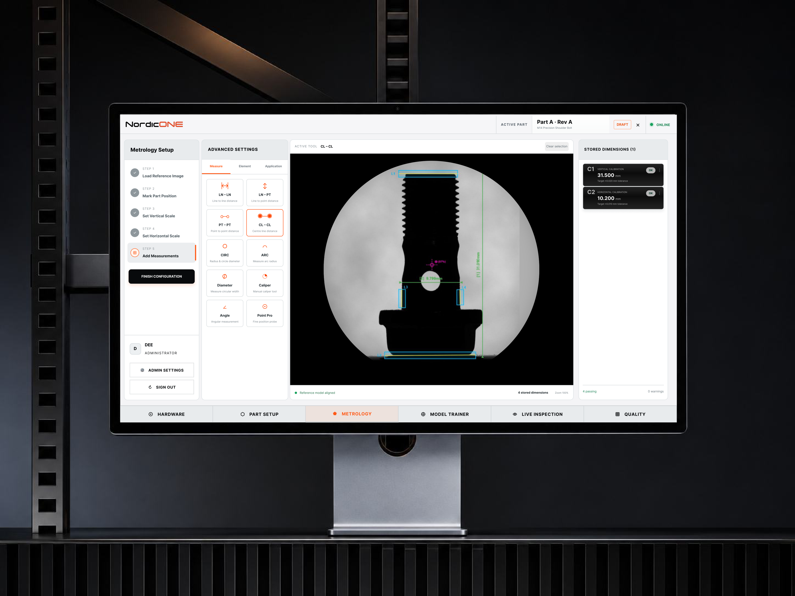

Designed a Connected Industrial software ecosystem
Nordic ONE · I led interaction design and vibe coded implementation for Nordic's flagship machine vision platform. Bringing four standalone manufacturing applications together through a consistent, intuitive experience

Make specialist manufacturing tools easier to set up and operate, while creating a consistent experience across four standalone applications.
From Prototype to Working Code
- Audit & Testing: Pinpointed workflow dead ends across raw engineering software.
- Interaction Architecture: Designed the 8-step guided wizard, Dual Sidebar, and gloved touch targets.
- Frontend Code: Built production UI and calibration math directly alongside 1 developer.
Predictable Setup & Protected Shifts
- 15-Minute Part Calibration: Cut new part onboarding from 3.5+ hours of developer-assisted trial-and-error down to 15 minutes (measured in end-to-end calibration walkthroughs alongside engineering).
- Approved Tolerances Locked: Validated part profiles freeze automatically so floor operators cannot alter calibration specs during live runs.
- Unified Suite Navigation: One consistent top shell, persistent breadcrumbs, and search foundation across Vision, ERP, MES, and EQMS.
Tailored information and actions for shop-floor operators, QA engineers, and plant managers, so each role could focus on the tasks relevant to them.
Organised part configuration into clear steps and made approval requirements visible in the flow.
Designed workflows around persistent Lot IDs, so users could carry CAD specifications and defect records across apps instead of entering the same information again.
Design response
- Guided workflow sidebar — Created a persistent process rail across stages to structure complex engineering tasks, keeping progress milestones and approval requirements visible.
- Protected approved profiles — Designed the interface to show approved tolerances as locked during live production runs.

- Task-based navigation — Added a stage rail to help users move between Part Setup, Live Inspection, Metrology, and Quality.
- Hardware-adaptive navigation — Automatically adds or subtracts bottom navigation stages based on physical cameras configured in hardware setup.
Metrology setup
The layout keeps calibration steps, measurement tools, the inspection canvas, and saved results visible in one unified workspace.
- Fixed calibration steps — Keeps the user oriented through the measurement sequence.
- Measurement results — Keeps saved dimensions and their status visible alongside the image.

- Grouped measurement tools — Makes geometric tools easier to scan beside the canvas.
- On-screen measurement overlay — Projects live dimension calipers and datum alignment brackets directly over the part silhouette.
In end-to-end calibration walkthroughs with engineering, the guided flow took around 30 minutes, compared with more than 3.5 hours in the previous developer-assisted process.
I adapted the interface to the needs of shop-floor operators, QA engineers, and plant managers. Operators see larger, simpler controls for use on the floor. QA engineers get access to detailed inspection tools. Managers see a higher-level view for monitoring work.

Shop-floor operators and desk-based QA teams use the software in different conditions. I adjusted screen hierarchy, information density, and touch target size to suit each context, while keeping a consistent visual language across the independently developed apps.

A defect affects more than the inspection station. It can require production and quality teams to respond, and inventory teams to contain affected parts. I mapped how that information could move across Vision, MES, EQMS, and ERP.

Detecting and responding to defects
I worked with engineering on the Vision interface and calibration workflow. The software classified visual defects against approved profiles. The local line-stop interlock was handled by engineering.
Exploring downstream handoffs
The prototype illustrated how a defect could create an EQMS non-conformance record, pause a MES work order, and flag related inventory in ERP. These interactions represent the target workflow, not shipped cross-app automation.
Reducing distractions on the shop floor
The early concept combined camera feeds, machine data, and work orders in one view. I explored a simpler floor interface that gives operators a clear machine state and makes the primary action easier to reach, while keeping detailed engineering information in desk-based views.
Focused the floor view on clear running or paused states.
Proposed larger controls and more spacing for use with gloves.
Kept detailed telemetry in engineering views instead of placing it all on the operator screen.
Vision, ERP, MES, and EQMS were built independently by different engineers. I defined shared interaction patterns to make the apps feel more consistent where users move between them.
App navigation
A shared way to identify and move between applications.
Search concept
A common search pattern for finding records such as Lot IDs and work orders.
Location context
Plant, line, and station breadcrumbs to help users understand where they are working.
Tables and status labels
Consistent formatting to make production records easier to scan.

I worked across interaction design, walkthroughs, and frontend implementation for Nordic Vision, while defining shared patterns for the wider suite. The work turned fragmented engineering interfaces into clearer setup, inspection, and measurement workflows, and explored how the four apps could support a more connected factory process.

Nordic ONE — Connected Industrial Software Ecosystem
Lead Industrial Interaction Designer · Interaction Design, Design Systems & Hands-On Implementation
Explore other case studies
AERA
Improving clean air distribution in commercial workspaces through modular architectural air-purification.
View case study →GLIDE
Taking local businesses beyond the storefront with a transformable electric vehicle and pop-up retail system.
View case study →Nordic OS
Internal operations workspace connecting optical discovery, 9-stage engineering handoffs, and 11-role access.
View case study →Extra Work
Physical hardware consoles, vibe-coded canvas utilities, and foam ergonomics studies.
View explorations →